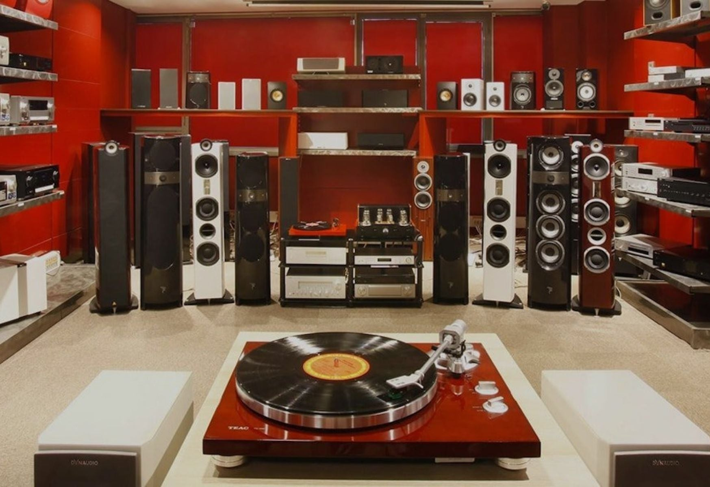
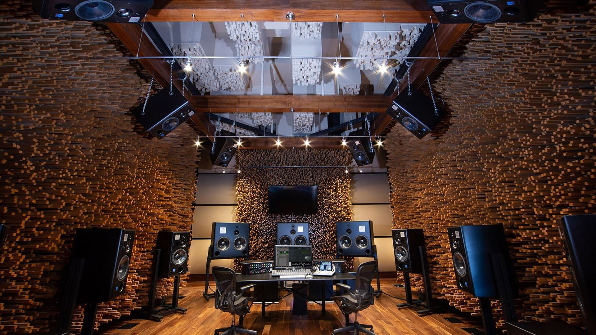
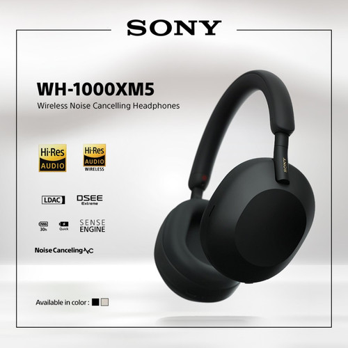
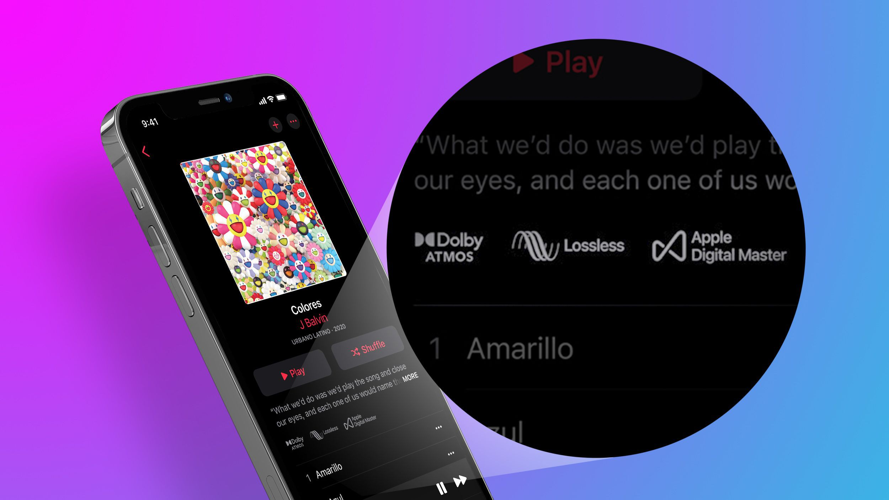
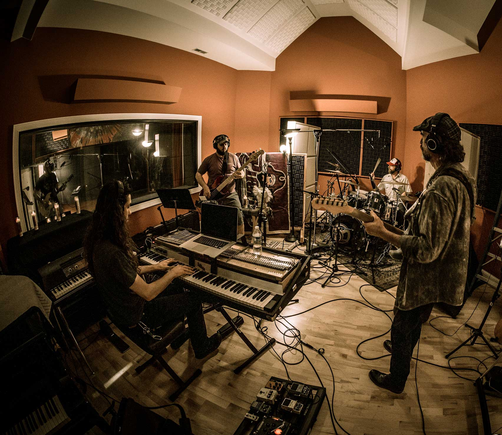

Home
Being an audiophile is about chasing the purest sound experience—whether through vinyl, high-resolution digital audio, or live performances. This site dives into my journey with this sonic passion, exploring what it means to truly hear music as it was intended.
An audiophile is someone who is passionate about high-quality audio and music reproduction. They seek to experience sound as close to its original recording as possible, with an emphasis on clarity, detail, and authenticity. Audiophiles often invest time and resources into building a superior audio setup, which might include:
High-end Equipment: Specialized speakers, headphones, amplifiers, turntables, and digital-to-analog converters (DACs).
Acoustic Treatments: Optimizing their listening spaces to reduce sound distortion or interference.
Source Material: Preferring uncompressed formats like FLAC or vinyl records over compressed formats like MP3s, to maintain audio fidelity.
It's not just about owning expensive gear; audiophiles appreciate the science and artistry of sound engineering. They often have a deep knowledge of acoustics and enjoy experimenting to find the perfect audio setup tailored to their tastes.

About Me
I’ve been an audiophile for over a decade, starting with a modest stereo system and evolving into a collector of rare vinyl and high-end gear. What began as a simple interest has grown into a deep passion for the art of sound.
As a casual audiophile, my appreciation for music goes beyond just enjoying melodies and lyrics—I take delight in the intricate details and technical aspects of sound. I find joy in listening to various instruments, savoring the nuances of their tones and the subtle elements that might elude others, like a faint guitar riff or the resonance of a piano chord. My interest in sound staging, stereo separation, and spatial audio highlights my love for experiencing music in an immersive, three-dimensional way, where I can sense the placement of each instrument and feel the depth of sound. With a diverse taste in music, spanning pop, hip-hop, jazz, soft rock, Indian music, and Bollywood, I explore an eclectic mix of rhythms, melodies, and production styles. Whether it’s the vibrant beats of hip-hop, the soulful instrumentation of jazz, or the intricate layers in Bollywood tracks, each genre offers something unique to satisfy my audiophile curiosity. This passion is complemented by a keen interest in exploring sound quality, making each listening experience not just a moment of enjoyment, but an adventure into the world of audio craftsmanship.

Best Listening Times
Late evenings offer a perfect sanctuary for immersive listening, as the stillness of the world enhances every subtle detail in the music, allowing each note, beat, and melody to resonate with unparalleled clarity. It's a time when the layers of sound seem to unfold effortlessly, creating an intimate connection with the music.
Early mornings bring their own charm, especially with the aroma of fresh coffee mingling with the warmth of a vinyl spinning on the turntable. The combination of soft morning light and a fresh perspective sets the tone for an uplifting start to the day, making music feel like a rejuvenating ritual. Both moments capture the essence of savoring sound in its purest form.
Best Spaces
A dedicated listening room with acoustic treatment is the ultimate haven for audiophiles, allowing music to be experienced in its purest and most unadulterated form. This space is meticulously designed to eliminate external noise and control sound reflections, ensuring that every note, rhythm, and detail is heard exactly as intended by the artist. Acoustic panels, bass traps, and diffusers are strategically placed to balance sound frequencies, reduce echoes, and prevent distortion, creating an environment where sound staging and stereo separation can truly shine. The layout often includes carefully chosen furniture and materials that complement the room's acoustic properties without interfering with the sound. Lighting, too, is tailored to enhance the ambiance, often soft and warm to encourage an immersive experience. For an audiophile, this room becomes more than just a place to listen—it transforms into a sacred space where music is not just heard but felt, offering an unparalleled connection to the art of sound.

How To
Getting started on your audiophile journey is all about making thoughtful choices and experimenting to find what suits your preferences. Invest in Quality Equipment: Start with a solid pair of headphones or speakers that align with your budget and sound preferences. For example, the Sony WH-1000XM5 noise-canceling headphones are an excellent choice, offering superb clarity, a balanced sound profile, and noise-canceling features that enhance immersion. Focus on quality over quantity—better to have one great pair than several mediocre ones.

Explore Lossless Audio: Step up your audio game with high-quality lossless formats like FLAC or streaming services like Tidal and Apple Music Lossless. Lossless audio retains the full quality of the original recording, ensuring you hear every detail in the music. Pair this with formats like Dolby Atmos, available on platforms like Apple Music, to experience a multidimensional, spatial sound.

Optimize Your Listening Space: If you’re using speakers, experiment with placement to create the best soundstage. Position them at ear level and form an equilateral triangle with your listening position for optimal stereo separation. For added fidelity, consider acoustic treatments like foam panels or diffusers to reduce room echoes and improve overall sound clarity.
Leverage Versatile Playback Devices: Use devices that support high-resolution audio, such as Apple or Android phones. Many modern smartphones are equipped to handle lossless audio, and pairing them with a high-quality digital-to-analog converter (DAC) can elevate your listening experience even further.
Experiment and Enjoy: The audiophile journey is about exploration. Test different genres, devices, and audio setups to find what resonates with you. Play with EQ settings, try out various streaming platforms, or even delve into vinyl if you’re looking for a nostalgic, analog experience. This methodical yet personal approach ensures you're not just hearing music but truly experiencing it in all its richness and depth.
Why I Love It
For me, being an audiophile is more than just a technical appreciation of sound; it’s a way to bridge the gap between the artist's intention and my own experience. It’s about hearing music exactly as it was meant to be heard—capturing every delicate nuance, every subtle breath, and every raw emotion embedded in the performance. Each piece of music becomes a story, conveyed not just through melody and lyrics but through the textures, dynamics, and layers of sound. This hobby allows me to connect with music on a profoundly intimate, almost spiritual level, transforming listening into a meditative act where the world fades away, leaving only the resonance of a shared human expression. It's a reminder of the artistry and vulnerability behind every note, offering an unmatched depth of experience that transcends mere entertainment.

AI Prompts
Here are the prompts I used to generate images for this site:
- "Photorealistic image of a vintage turntable with vinyl records and warm ambient lighting"
- "Photorealistic portrait of an audiophile listening to music through headphones in a cozy room"
- "Photorealistic scene of a cozy room at night with a high-end audio system glowing softly"
- "Photorealistic image of a modern listening room with speakers, acoustic panels, and warm lighting"
- "Photorealistic image of high-end headphones on a wooden stand next to a tube amplifier"
- "Photorealistic image of a live music performance with vibrant stage lighting and clear sound waves"
- "Photorealistic image of audio format logos with a modern music interface"
- "Photorealistic image of a smartphone displaying a music app with lossless audio certifications"
- "Photorealistic image of smartphones with Apple and Android logos on a wooden surface"
These prompts ensured a consistent photorealistic style that reflects the audiophile aesthetic.